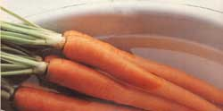
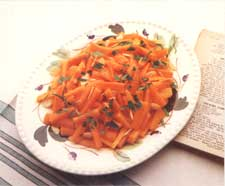

KITCHEN GARDEN
The crunch that calms.
A few years back, a study of the effects of sounds on stress revealed that the noises made when chewing crunchy foods seemed to relieve tension. I can't vouch for that report, but I know there is a special pleasure in the crispy crunch of a carrot, and it's especially sweet when the root is homegrown.
As I write this, carrots from the autumn garden stand upright in a glass on my desk, waiting to be munched while I contemplate the coming sentence. And even if my nibbling fails to relieve the stress of an approaching deadline, I'm still supplying my body with a high dose of vitamin A, which increases disease-resistance in such moist body membranes as eyes and throat and helps maintain vision in. the face of computer-monitor eyestrain. (Vitamin A is also essential for children's growth and important to the production of sex hormones.) In addition to supplying more than the recommended daily allowance (RDA) of vitamin A, each raw, low-calorie root provides me with vitamins B, C, D, E and K, along with beta carotene, which may help ward off cancer.
What to Plant
Some think the carrot is a native of Afghanistan. We know it's been cultivated in the Mediterranean region for over 2,000 years, and that Asians and Greeks have prized its medicinal qualities for centuries. About 600 years ago, Daucus carota spread east to China and north to Europe. Flemish refugees brought the vegetable to England during the reign of Elizabeth I, and it accompanied the first settlers to this continent. But it wasn't until some 100 years ago that French horticulturist Vilmorin-Andrieux turned the small, white root of this biennial, which resembles Queen Anne's lace, into the plump, succulent, brightly colored vegetable we enjoy today.
Until recently, about the only carrot varieties found in seed catalogues were the good-eating Nantes; the short, stout Chantenay; the hefty Imperator; and the long, slender Danvers. Today, these have all been improved, and a host of new hybrids, including carrots with white, yellow, crimson, or purplish roots, have come on the scene. There are early and late types, with the time from planting to harvest ranging from 55 to 80 days. Carrots also come in all sizes and shapes: fat, slender, medium-sized, round, finger-length and bite-sized midgets.
The taste and texture of a carrot are more likely to depend on proper cultivation in a good soil than on the choice of a particular cultivar, but varieties can have special qualities. For example, Tip Top (a large Nantes) is great for juicing; Juwarot (a Danvers) has nearly double the vitamin A content of most carrots; King Midas is disease- and crack-resistant; thick-shouldered Goldinheart (a Chantenay) does well in heavy soils and freezes nicely; Belgium White is especially delicious in salads; Baby Finger Nantes is excellent for cooking; and Golden Ball (early, round, two-inch-diameter) is ideal for shallow soil.
In choosing a carrot, it's a general rule to select one with a short root if your dirt is heavy. These smaller versions are also best suited for growing in containers. Carrots, in fact, are among the easiest vegetables to grow, and the success of your crop will rest almost entirely on the quality of the soil.
Where to Plant
The best growing medium for carrots is sandy loam and the worst is heavy clay, but any plot can be made suitable with adequate manuring and composting-and carrots thrive in raised beds. Try using two buckets of compost and two of leaf mold to each square yard of heavy dirt. Add sand, if necessary. Though leaf mold can be worked in at planting time, beds should be composted and manured at least six months before sowing. Otherwise, your carrots will be tough, watery, knobby and forked, with many side rootlets. Too much nitrogen also gives carrots a poor taste. A prime location for a carrot patch is where a crop, especially of such light feeders as peas, was heavily manured the year before.
If the soil is acid, add lime to bring the pH to around 6.3. Adequate potash (in the form of greensand, crushed granite or kelp meal) and phosphate (try soft phosphate, bone meal or phosphate rock) will insure good flavor. Incorporating peat into the soil is helpful, too, because, while the carrot patch should be well drained, it shouldn't be dry, and peat will both encourage drainage in a clay soil and hold moisture in a sandy medium.
To avoid deformed carrots, dig or plow the patch deeply and rake thoroughly. Lumps and stones should be removed, using a garden sieve if necessary.
In selecting a plot for your carrot patch, keep the following in mind: The plants like full sun, but will tolerate partial shade. They also prefer ground temperatures between 60°F and 70°F. If the earth is too warm, roots may be stunted; if too cold, they become pale and skinny. Heavy mulch will also keep ground temperatures cool and help retain needed moisture.
Carrot-Pineapple-Cream Cheese Salad
2 cups finely grated carrots 2 cups pineapple chunks, fresh or canned 1 or 2 packages cream cheese 1/2 onion, finely grated 1 tablespoon lemon juice
Mound grated carrots in the center of a dish. Place pineapple chunks and squares of cheese around carrots. Sprinkle onions and lemon juice on top of the carrots. Serve with slices of slightly toasted and buttered whole wheat or rye bread.
Orange-Almond Carrots
1 pound carrots, scraped and cut into 1" pieces 1/2 cup orange juice 2 tablespoons honey 1 tablespoon margarine 1/2 teaspoon salt 1/4 teaspoon grated lemon rind 1/3 cup slivered almonds 1 tablespoon chopped fresh parsley
Steam carrots for 15 to 20 minutes or until tender. Combine orange juice, honey, margarine, salt and lemon rind in a saucepan. Bring to a boil, then simmer uncovered for 5 minutes. Add carrots, stir in almonds and cook just enough to heat. Garnish with parsley. Serves 4 to 6.
How to Plant
Because carrots are usually planted as a cool-weather crop, it's often recommended that they be sown in the very early spring in temperature climates and in the fall or winter in subtropical regions. In fact, you can plant your first crop three weeks before the soil even warms up. To enjoy a long harvest of fresh carrots. plant again every two to three weeks. The last temperature-climate planting should be, depending on the variety, two to three months before the average date of the first fall frost. Sow enough at this time to assure a supply of carrots throughout the winter and into early spring.
Carrot seeds are very tiny. (One ounce will sow 100 feet or more.) Some gardeners broadcast the seeds, but it's easier to avoid accidentally weeding them out if they are planted in rows. Put about six seeds to the inch, pinching them between finger and thumb to control the amount planted.
Germination will be slow-usually occurring in 10 days to three weeks. It helps, then, to mix in quick-sprouting radish seeds to mark the rows. Harvesting the radishes or lettuce will provide the carrots with some natural thinning and keep the soil loose.
Cover the seeds with 1/4 to 1/2 inch of loose soil. (In dryer, warmer places, you can plant a little deeper.) Carrots need moisture to germinate, so water gently, being careful not to wash the seeds away.
When the tops are about two inches high, start thinning. Be ruthless, or you'll end up with small, deformed carrots that often entwine around each other. Besides, you'll enjoy eating these tender, sweet culls in salads. Continue thinning until the vegetables are spaced three to four inches apart.
Don't let the carrot bed dry out, and soak it thoroughly when watering. As the crop matures, though, cut back on the water to prevent the carrots from cracking. Keep weeds away with shallow cultivation, and hand-pull any invaders in the rows themselves, since bruised carrots attract carrot rust flies.
What to Watch For
Many garden books will tell you that carrots have no significant pests or diseases. This is often true, but there are some dangers you should know about, and the carrot rust fly is one of them. Most prevalent in the Northwest, it looks like a tiny housefly with a dark green,1/4-inch-long body and yellow head with red eyes. Its eggs, which it lays on the plants, hatch into whitish larvae that burrow into the roots, turning them a dark red. The first aboveground sign is carrot leaves turning a dark black. Since infestations usually occur in the early spring, delaying planting until early summer can avoid the problem. Maggots from a second generation of adult flies later in the summer seldom cause much damage.
The fly is attracted by the carrots' odor, so try interplanting rows of carrots with rows of onions, which could deter both the carrot and the onion fly, since the scent of one crop will cover that of the other. Remember, too, that thinning releases the aroma of the foliage. Since the carrot fly is seldom around during the evening, cull at that time or on a day with a light rain. Crop rotation also helps to avoid this pest.
The carrot worm, the larva of the black swallowtail butterfly, is a green caterpillar with black stripes and white or yellow dots that sticks out little orange horns when threatened. Handpick these in the morning, or use Bacillus thuringiensis or rotenone. Handpicking or rotenone will also take care of carrot weevils, while infestations of aphids can be controlled with ladybugs, hard hose-sprays, sticky traps, garlic sprays, wood ashes or garden-quality diatomaceous earth.
Wireworms (hard-shelled, jointed, reddish brown and up to 1 1/2 inches long) can be controlled by strewing wood ashes between the rows.
Sandy-soil gardeners may have trouble with nematodes: microscopic roundworms that make little knots along rootlets and stunt the carrots. If you have this problem, dose the soil with healthy humus before your next sowing, since compost is rich in predatory microorganisms.
Leaf blight is among the most common carrot diseases. It produces white to yellowish spots on leaves (these discolorations eventually turn brown). It can be remedied by spraying the plants with a copper-lime mixture or avoided altogether by preheating the seeds in 126°F water for 10 minutes or by planting a blight-resistant variety.
Mosaic, which is spread by aphids, mottles leaves with light to dark shades of green. It can be prevented by controlling the aphids.
Hot, humid weather sometimes brings on vegetable soft rot, a bacterial disease that discolors the foliage and causes the roots to become soft, slimy and foul-smelling. (It can also strike stored carrots, so cull any bruised roots and make sure the harvested crop is aerated.) Loose, well-drained soil and crop rotation are the best preventives.
However, the main danger to your carrot crop will not be insects and diseases, but such larger pests as deer, gophers, ground hogs and rabbits. A good fence or dog is your best defense against these animals. Pouches of dog hair or human hair, or bars of soap hung around the garden, can also act as deterrents to deer. Rabbits are said to be turned back by sprinkling wood ashes, garlic powder, chili powder, ground red pepper or talcum powder about the bed. (Replenish after rains.) Ground hogs usually have to be shot or trapped, but you can also plant onions and garlic around their burrows or lure them away from the garden with plots of alfalfa or clover, their favorite foods. Plant castor bean or mole plants to deter gophers-but not if small children ate around, since these are poisonous. You can also spray a mixture of one tablespoon of castor oil and one tablespoon of liquid detergent to a gallon of water on the ground and plants, use baited traps, or put chili and garlic powder in the tunnels every week.
How to Harvest and Store
The younger the carrots, the tenderer they'll be. A small head or crown of orange will appear at the soil line when the carrots are maturing. If they poke their heads too far out of the soil, mound dirt or mulch over them to prevent greening of the shoulders. Pull only those carrots you'll need, since the roots will stay fresh in the ground for quite a while.
Gather your winter carrots before the first frost. Pick a day when the soil is moist but the air is dry. You can lift the carrots with a spading fork, but be careful not to bruise them, since bruised roots can't be stored. It's better to harvest by hand, using a trowel if necessary to loosen the dirt.
Properly stored fresh carrots keep well, retain their flavor and have a higher nutritional value than preserved ones, so you can simply twist off the leaves and place the unwashed roots-not touching-between layers of sand or peat in boxes or plastic trash cans topped with straw. The containers should be kept in a cool, frost-proof place. If it's not feasible to keep them indoors, you can bury your surplus in a straw-lined trench, covered with a thin layer of dirt.
To can your harvest, top, clean, scrape, and cut the roots into sections. Pack in jars with water and process in a pressure canner at 10 pounds of pressure for 30 minutes for quarts, 25 minutes for pints.
Freeze carrots as soon as possible after they're pulled. Choose small specimens, cut off the tops, wipe with a damp cloth, blanch for two minutes, cool, pat dry, pack, and freeze. Mature carrots can be scraped, sliced, cut into cubes and blanched for three minutes before freezing. They'll add a bright touch to winter soups and stews. But if you're stressed or up-tight, pull a raw root out of storage and munch away. You've nothing to lose-and a lot of nutrition to gain.
|
 Add a bright splash of color to any meal with a tasty,nutritious dish of Orange-Almond Carrots. |
 |
|